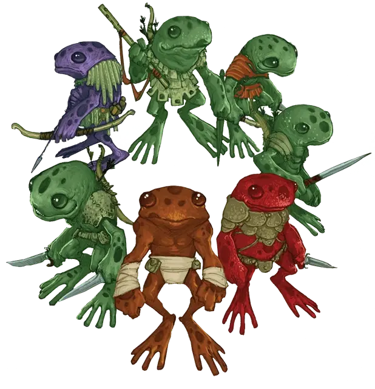

Грунг
Grung

Разумные, ядовитые лягушки, которые живут на деревьях. Боги и вправду нас ненавидят.
– Воло
Грунги – это агрессивные жабоподобные гуманоиды, которых можно встретить в дождливых лесах и тропических джунглях. Они яростно защищают территорию и мнят себя превосходящими остальных существ.
Подробнее с лором грунгов можно ознакомится в статье «Бестиарий: Грунги».
Проживающие на деревьях амфибии
Грунги живут в деревьях и предпочитают тень. Инкубатор грунгов хорошо охраняется и находится в прудах на уровне земли. Спустя примерно три месяца после вылупления головастик грунга принимает форму взрослого. Еще от шести до девяти месяцев занимает у юного грунга процесс взросления.
Касты и цвета
Общество грунгов основано на системе каст. Каждая каста откладывает яйца в отдельный пруд инкубатор и юные грунги присоединяются к своей касте после появления из инкубатора. Все грунги тускло–зелено–серые при рождении, но каждый индивид принимает цвет своей касты пока взрослеет.
Зелёные грунги — это воины, охотники и рабочие племени, а синие работают ремесленниками и занимаются домашними делами. Надзирают и направляют обе группы фиолетовые грунги, которые служат администраторами и командирами.
Красные грунги — это ученые племени, использующие магию. Они стоят выше фиолетовых, синих и зеленых грунгов и им отдают уважение даже грунги более высокого статуса.
Высшие касты включают в себя оранжевых грунгов, элитных воинов, которые имеют власть над всеми меньшими грунгами, и золотых грунгов, которые занимают высшие лидерские позиции. Правителем племени всегда является золотой грунг.
Грунг обычно остается в своей касте на всю жизнь. В редких случаях, индивид, который отличился великими свершениями, может заработать приглашение на вступление в более высокую касту. Посредством смеси тонизирующих трав и ритуальной магии, возвышающийся грунг меняет цвет и принимается в новую касту так же как и любой юный грунг. С этого момента, грунг и его потомство являются членами более высокой касты.
Ядовитые от природы
Все грунги выделяют субстанцию, которая безвредна для них, но ядовита для других существ. Грунги используют яд для отравления своего оружия.
Работорговцы
Грунги всегда выискивают существ, которых можно схватить и сделать рабами. Грунги используют рабов для любых типов работ слуг, но в основном они просто любят ими помыкать. Рабов кормят слегка отравленной едой, чтобы они оставались апатичными и податливыми. Существо, подверженное этому в течение долгого периода времени, становится лишь оболочкой прежнего себя и может вернуться в нормальное состояние только посредством магии.
Особенности грунгов
Ваш персонаж-грунг обладает следующими особенностями.
Увеличение характеристик. Значение вашей Ловкости увеличивается на 2, а значение Телосложения на 1
Скорость. Ваша базовая скорость ходьбы составляет 25 футов и вы обладаете скоростью лазания, равной 25 футам.
Возраст. Грунги достигают зрелости за один год, но известно, что живут они до 50 лет.
Мировоззрение. Любое.
Размер. Грунги от 2½ до 3½ футов (от 76 сантиметров до 1 метра) в высоту и весят в среднем около 30 фунтов (13,6 килограммов). Ваш размер Маленький.
Древесная бдительность. Вы владеете навыком Восприятие.
Амфибия. Вы можете дышать воздухом и под водой.
Иммунитет к ядам. Вы имеете иммунитет к урону ядом и состоянию отравленный.
Ядовитая кожа. Любое существо, которое захватывает вас или иным образом вступает в прямой контакт с вашей кожей, должно преуспеть в спасброске Телосложения Сл 12, иначе станет отравленным на 1 минуту. Отравленное существо, которое больше не находится в непосредственном контакте с вами, может повторять спасбросок в конце каждого своего хода, оканчивая эффект на себе при успехе.
Вы также можете нанести этот яд на любое колющее оружие частью атаки этим оружием; в таком случае яд сработает иначе. При попадании этой атакой цель должна преуспеть в спасброске Телосложения Сл 12, иначе получит 2к4 урона ядом.
Прыжок с места. Ваш прыжок в длину может быть до 25 футов, а в высоту — до 15 футов, с разбегом или без.
Зависимость от воды. Если вам не удастся погрузиться в воду хотя бы на 1 час в течение дня, вы получаете одну степень истощения в конце этого дня. Вы можете оправиться от этого истощения только с помощью магии или погрузившись в воду по крайней мере на 1 час.
Языки. Вы можете говорить, читать и писать на языке Грунгов.